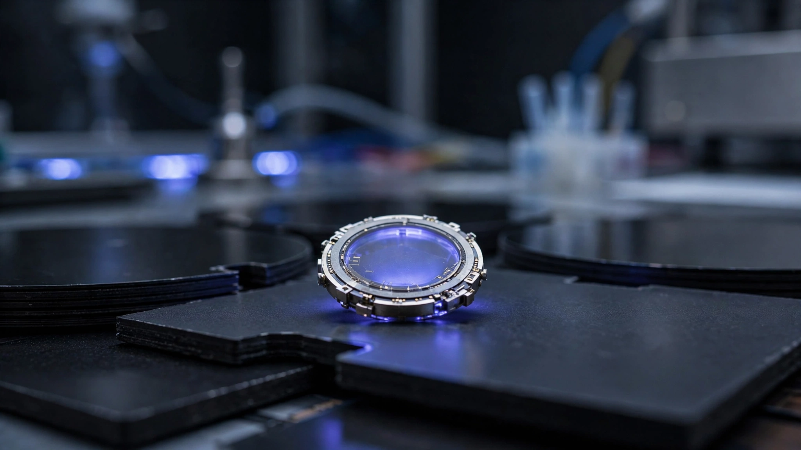

⚡ Energy
China's Nuclear Battery Just Got 15× More Powerful. It Would Still Take 1,692 Years to Charge Your Phone.
A new carbon-14 betavoltaic cell produces 1.13 microwatts in a cubic inch, a 15-fold density jump. We ran the numbers on what it can actually power, the theoretical ceiling locked in the physics, and why the real race isn't about phones at all.

One point one three microwatts. That is the maximum output of China's newest nuclear battery, a device called Qianjiyuan Tianshu that fits inside a cubic inch and runs on carbon-14, the same isotope archaeologists use to date ancient bones. Researchers at Northwest Normal University in Lanzhou announced it this week as a successor to their 2024 prototype, Zhulong-1, which managed just 433 nanowatts. A 15-fold jump in volumetric power density is genuine, and it represents a real achievement in materials engineering, but 1.13 microwatts is roughly the amount of power a single grain of rice absorbs from sunlight on a cloudy day.
Headlines will call this a breakthrough. Technically, they are not wrong. But the interesting question isn't whether the number went up, because of course it did; what matters is how far 1.13 microwatts sits from anything useful, what the physics says about the ceiling, and whether the right isotope is even inside this battery.
Solar Panels for Radiation
Traditional nuclear batteries, the kind that powered NASA's Voyager probes since 1977 and still run the Curiosity rover on Mars, convert radioactive decay heat into electricity using thermoelectric materials. Heavy, hot, and built around dangerous isotopes like plutonium-238, these generators belong in deep space: Curiosity's Multi-Mission Radioisotope Thermoelectric Generator weighs 45 kilograms and produces 110 watts, which is remarkable for a robot 225 million kilometers from the nearest outlet but wildly impractical for anything you might want to implant in a human body or strap to a shipping container.
Betavoltaic batteries take a different approach entirely. Structured like solar panels, they capture beta particles, electrons flung out during radioactive decay, using a semiconductor rather than harvesting decay heat through thermoelectric conversion. Carbon-14 emits these electrons at relatively low energy, averaging 49 keV and maxing out at 156 keV, which means the radiation is weak enough for silicon carbide to stop without external shielding, without heat management, and without any danger if someone cracks open the case.
Qianjiyuan Tianshu uses 129 millicuries of carbon-14 pressed against a domestically manufactured silicon carbide transducer arranged in a three-dimensional stacked architecture. By reducing the battery's volume 17% while increasing raw power output 2.6× over Zhulong-1, the researchers achieved their 15× volumetric density jump through a combination of five upgrades: a better-matched radioactive source, three-dimensional stacking that saves space, improved integration, a micro-power management system, and built-in sensors enabling self-powered operation. "Earlier versions suffered from low power, poor integration and high costs, so the team focused on making the device compact, powerful, affordable and fully domestically produced," said Su Maogen, project lead at Northwest Normal University.
A Ceiling Nobody Calculated
Here is the math that none of the press coverage ran. Carbon-14's average beta energy is 49.47 keV per decay event, and at 129 millicuries this source produces 4.773 billion decays per second. Multiply those together and you get the total thermal power available from the radioactive material: 37.85 microwatts.
From that budget, the battery currently extracts 1.13 microwatts. Conversion efficiency: 3.0%.
Two conclusions follow simultaneously. First, significant room for improvement remains, roughly 33× of headroom before the team hits the thermodynamic wall. Second, and this is what matters for anyone dreaming about nuclear-powered gadgets, even perfect capture of every single beta particle from those same 129 millicuries of carbon-14 would yield only 37.85 microwatts. A spectacular nuclear battery, absolutely. Still not enough to run a pacemaker.
| Device | Power needed | Units required | Combined volume |
|---|---|---|---|
| Cardiac pacemaker (steady-state) | 50 µW | 44 | 739 cc (a wine bottle) |
| Low-power IoT sensor | 100 µW | 88 | 1,478 cc (a large thermos) |
| Bluetooth LE beacon | 10 mW | 8,850 | 149 liters (a bathtub) |
| Smartphone (standby) | ~1 W | 885,000 | 14,900 liters (a shipping container) |
Or consider the absurdity in temporal terms. An iPhone 16's battery stores about 60,300 joules of energy, and at 1.13 microwatts, filling that battery would take 5.34 × 10¹⁰ seconds, which works out to 1,692 years. By that point the carbon-14 source would still retain 74.5% of its original activity, meaning the nuclear battery outlives the charge cycle but just barely, and you would have waited nearly two millennia for the privilege of turning on your phone once.
Competitors Already Ahead
A 15× improvement sounds dramatic until you look across the broader nuclear battery landscape and realize how far behind carbon-14 actually sits in raw power output. Beijing-based Betavolt's BV100, unveiled in January 2024, uses nickel-63 instead of carbon-14 and produces 100 microwatts in roughly 1.1 cubic centimeters, delivering 1,327 times more power per unit volume than the Qianjiyuan Tianshu. Russian researchers at the Technological Institute for Superhard and Novel Carbon Materials hit 10 µW/cm³ back in 2018 using nickel-63 paired with diamond Schottky diodes, and a separate Chinese team working with strontium-90 demonstrated 3.17 milliwatts from a multi-module radio-photovoltaic cell, nearly three thousand times what Qianjiyuan puts out.
| Battery | Isotope | Power density (µW/cc) | Relative to Qianjiyuan |
|---|---|---|---|
| Zhulong-1 (2024) | C-14 | ~0.0045 | 0.07× |
| Qianjiyuan Tianshu (2026) | C-14 | 0.067 | 1× |
| Ohio State gamma cell (2025) | Co-60 | 0.375 | 5.6× |
| Russian diamond cell (2018) | Ni-63 | 10.6 | 158× |
| Betavolt BV100 (2024) | Ni-63 | 88.9 | 1,327× |
| Curiosity MMRTG | Pu-238 | ~3,333 | 49,746× |
So why bother with carbon-14 when nickel-63 delivers over a thousand times more power per unit volume? Because nickel-63 has a half-life of only 100 years, strontium-90 lasts just 28.8 years, and carbon-14 keeps decaying for 5,730 years, a timescale that outlasts virtually every human institution currently operating on Earth. For applications where nobody will ever change the battery, where the device must outlast the civilization that deployed it, that longevity difference becomes the entire value proposition. Ocean-floor sensors, nuclear waste monitoring instruments, and interstellar probes all need decades to centuries of maintenance-free micropower. Carbon-14 also decays via extremely low-energy beta radiation, making it the safest isotope in the lineup: no shielding required, no regulatory headaches, and no hazard during manufacturing or deployment.
Where the Improvement Curve Bends
From Zhulong-1 to Qianjiyuan Tianshu, power rose 2.6× in roughly two years. If that rate held, and there are strong reasons to believe it will not, the math projects pacemaker-level power from a single battery by about 2034. Reaching that target would require pushing conversion efficiency from 3% toward 100% while also scaling up the carbon-14 load beyond 129 millicuries, and both present serious obstacles: efficiency improvements bump into thermodynamic limits on how well a semiconductor can capture low-energy beta particles, while sourcing constraints throttle supply because carbon-14 must be reactor-produced and China's only commercial production facility is the Qinshan heavy-water reactor in Zhejiang province.
A more realistic trajectory sees SiC conversion efficiency climbing from 3% toward 15 or 20 percent over the next decade, matching the best silicon photovoltaics for this particle energy range, while the C-14 load increases moderately. That gets a single battery to roughly 10 to 15 µW, which is potentially useful for next-generation ultra-low-power pacemakers that some research groups are designing to operate at single-digit microwatt levels by supplementing battery power with energy harvested from body heat or heartbeat vibrations.
DARPA's Rads to Watts program is chasing an entirely different target. Avalanche Energy received a $5.2 million contract to develop kilowatt-class nuclear batteries for space and military applications, six orders of magnitude beyond what the Qianjiyuan Tianshu produces, using different isotopes, different conversion physics, and operating in a different regulatory universe. But the program signals where the U.S. defense establishment thinks the ceiling should actually sit.
An Isotope Trade-Off Nobody Discusses
Every nuclear battery team confronts the same fundamental design choice: energy per decay versus safety versus longevity. No isotope wins on all three axes, and the landscape of candidates exists on a spectrum where optimizing for one dimension always sacrifices another.
| Isotope | Half-life | Avg. beta energy | Safety profile | Supply |
|---|---|---|---|---|
| Carbon-14 | 5,730 years | 49 keV | Very safe | Reactor-produced, limited |
| Nickel-63 | 100 years | 17 keV | Very safe | Extremely limited (mCi-scale) |
| Strontium-90 | 28.8 years | 196 keV | Moderate (shielding needed) | Nuclear waste byproduct |
| Plutonium-238 | 87.7 years | Alpha (5.5 MeV) | Dangerous | ~1.5 kg/year global production |
Carbon-14 occupies the safest, longest-lived, lowest-power corner of this design space, and Qianjiyuan Tianshu represents the best battery anyone has built within those constraints. But "best in a constrained corner" differs from "best," and the constraint is physics rather than engineering. Nobody can squeeze more energy from a decay event that delivers only 49 keV. All you can do is catch a higher fraction of what's already there.
What This Didn't Prove
Qianjiyuan Tianshu specs come from the research team's own announcement, reported by Interesting Engineering and the South China Morning Post, and no peer-reviewed paper has been published yet. Independent verification of the 129 millicuries activity, the 1.13 µW output, and the 15× density claim remains absent. Zhulong-1, the predecessor, had an efficiency figure of 8% validated by the Hefei Institutes of Physical Science under the Chinese Academy of Sciences, but no equivalent external measurement has been announced for the new device.
Betavolt's BV100 faces similar scrutiny. After announcing plans for a 1-watt nuclear battery by 2025, the company has not delivered that product as of mid-2026, and IEEE Spectrum noted that producing 1 watt from nickel-63 would require roughly 20 curies of isotope, far exceeding the typical millicurie quantities commercially available on the global market. Infinity Power claims conversion efficiency above 60% using a novel electrochemical process, but operational details remain scarce.
Across this entire field, nuclear battery research is rich in announcements and thin on independently verified, commercially available products that anyone can buy, install, and put to work.
Bottom Line
China's 15× power density improvement is real progress in an obscure but important corner of energy technology, and the engineering achievement deserves recognition rather than dismissal. Yet the math imposes hard limits: 129 millicuries of carbon-14 can never deliver more than 37.85 microwatts, and the battery currently captures just 3% of that budget. Even at perfect efficiency, you are looking at a device that barely powers a single pacemaker and nothing larger.
Practical next steps are unglamorous but clear: push SiC efficiency from 3% toward the mid-teens, scale up C-14 sourcing through expanded reactor production, and target the narrow band of applications where decades-to-centuries of maintenance-free micropower matters more than raw wattage. Ocean-floor seismic sensors, deep borehole monitors, nuclear waste repository instrumentation, and possibly next-generation medical implants designed around microwatt power budgets all represent real markets with real demand. They are just not the markets that generate headlines about smartphones that never need charging.
What You Can Do
If you are designing IoT or implantable systems, betavoltaic batteries are approaching viability for sub-100 µW devices with multi-decade lifespans, and Betavolt's BV100 (if it ships as specified) alongside the strontium-90 RPVC architecture represent the nearest-term procurement options, while carbon-14 cells remain a research play rather than something you can source today. If you are evaluating claims in this space, demand third-party efficiency measurements and ask about isotope supply at scale before taking any announcement at face value. And if you are tracking the field for investment, watch DARPA's Rads to Watts milestones and Betavolt's 1W battery delivery timeline closely, because both are bellwethers for whether nuclear batteries cross from laboratory curiosity to commercial product within this decade.